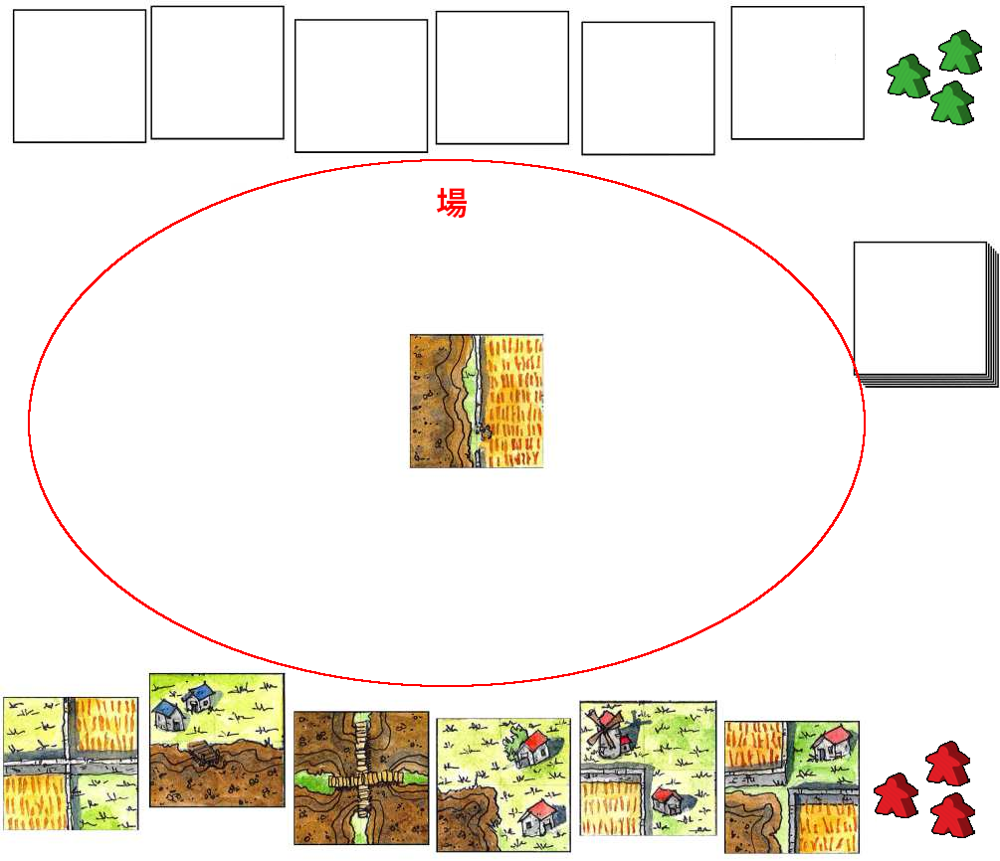
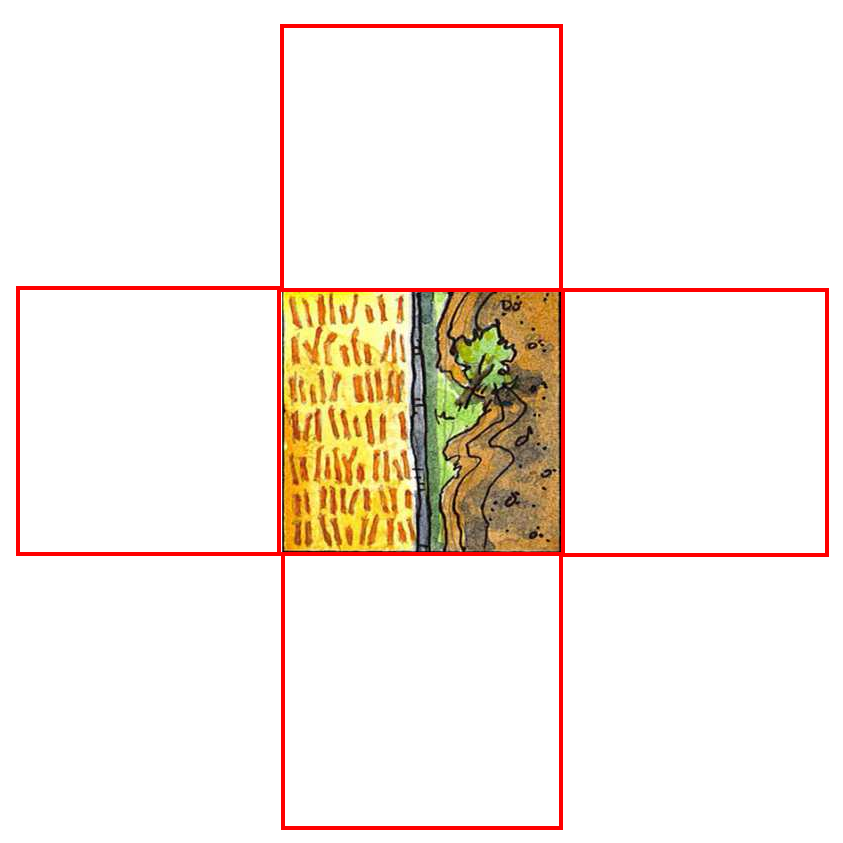

Farmopul 2 人用説明書 (私家版)
Archinerd によるマイクロプルのリテーマ
1 人用のソリティア パズルまたは 2 人用の対戦ゲーム
目次
- コンポーネント
- ゲームの手順
- ゲームの終了
- ゲームの勝敗
- 得点計算
- 用語
- 手札関係のルール
- タイルを場に出すときのルール
- 自分の山札と連続プレイに関するルール
- 農場にマーカーを乗せるときのルール
- 付録 A: リンク
- 付録 B: 3 人でプレイする場合のルール変更点
- 付録 C: 4 人でプレイする場合のルール変更点
- 付録 D: アプリ版 micropul
コンポーネント
- タイル 48 枚
- マーカー 6 個 (2 色 3 個ずつ)


ゲームの手順
- 最初に親を決める。
- 親はスタートタイル以外のタイルを伏せたままシャッフルしコアをつくる。
- 各プレイヤーはコアから 6 枚のタイルを引き手札にする。
最初のプレイヤーをランダムに決める。
-
最初のプレイヤーから各プレイヤーは以下の 3 つのうちのどれかを実行する。パスはできない。
- 自分の手札のタイルを 1 枚、場に出す。
- 自分の山札から自分の手札にタイルを 1 枚補充する。
- 農場に自分の農民を乗せる。
- ゲームが終了するまで 5 を繰り返す。
- ゲームが終わったら得点計算をする。
ゲームの終了
以下のいずれかの場合にゲームは終了する。
- 大地から最後の 1 枚のタイルが引かれ、自分の山札もしくは相手の山札に加えられた。
- 自分の手番だが 3 つの選択肢のどれもプレイできない。
ゲームの勝敗
得点計算の結果、得点が多い方が勝者となる。
ただしゲームの終了 2 でゲームが終了した場合はプレイできなかったプレイヤーは即時に敗者となる。
得点計算
- 自分の山札のタイル 1 枚に付き 2 点
- 自分の手札のタイル 1 枚に付き 1 点
- 自分が確保した閉じた農場に含まれる農地 1 つにつき 1 点。大農地は 1 点として数える。
用語
- タイル
-
農地や作業小屋、風車小屋、空き地が描かれている。
- スタートタイル
-
ゲームのセットアップ時に場に置かれる左の模様のタイル。
- 大地
-
シャッフルされて伏せられたまま積まれたタイルの山。全てのタイルの供給元。
- 自分の山札
大地から引いた伏せられたままの自分専用のタイルの山。ゲームスタート時は存在しない。
- 手札
- プレイにより増減する。ゲームスタート時の枚数は 6 枚。
- 場
-
タイルを並べてゆく場所
 - 農民
-
マーカーを農民と呼ぶ。農場に乗せる。
- 農地
-

タイルに描かれている農耕可能な土地。畑になっているものと土の状態のものがある。
- 大農地
-
タイル全面に描かれた大きな農地。右例のように農地 4 つと作業小屋や風車小屋が合わさっている。大農地上の作業小屋や風車小屋はタイルの 4 つの辺全てに接している。
- 農場
-
ひとかたまりになった同じ種類の農地の集まり。農地単体であっても農場である。
- 閉じている
-
農場のうち、異なる種類の農地、作業小屋、風車小屋、空き地に囲まれて周囲から切り離されており、それ以上農地が増えない農場を閉じた農場と呼び、その農場は閉じているという。右図では右中段のタイルがプレイされることで土の農場が閉じる。
- 作業小屋
-
1 棟の作業小屋、2 棟の作業小屋の 2 種類がある。
- 風車小屋
手札関係のルール
- 手札のタイルの数は 6 枚を越えてはならない。
- 手札の補充は自分の山札からしかできず直接コアから補充はできない。
タイルを場に出すときのルール
-
プレイするタイルはすでに置かれているタイルに隣接して繋がるように配置しなければならない。下図の赤線で囲まれた場所にしかタイルを置くことができない。
 -
タイル同士は下図のように同じ種類の最低 1 組の農地同士が必ず接していなければならない。
-
下図のように異なる種類の農地は接してはいけない。この例ではプレイタイルを 90 度反時計回りに回すとタイルを置くことができる。
タイルを置くことができた場合、プレイタイルと隣接タイルの農地と作業小屋が接しているか必ずチェックすること。なぜかというと作業小屋と農地が接すると大地を開墾することができるからである。大地を開墾することについては次項で述べる。
作業小屋、風車小屋、空き地は隣接タイルの農地に接してもかまわないし、接さなくてもかまわない。接していない場合は大地を開墾することも連続プレイもできない。
自分の山札と連続プレイに関するルール
大地を開梱する
下のようにタイルをプレイすると、農地と作業小屋が隣り合うことで大地を開墾、すなわち大地から自分の山札にタイルを引いたり、農地と風車小屋隣り合うことでもう 1 度だけ連続プレイをすることができる。
1 棟の作業小屋が隣接タイルの農地に接しているため大地を開墾することで 1 枚のタイルを大地から自分の山札に伏せたまま引くことができる。また 2 棟の作業小屋も隣接タイルの農地に接しているため大地を開墾することで 2 枚のタイルを大地から自分の山札に伏せたまま引くことができる。

プレイタイルの左上の農地が隣接タイルの 1 棟の作業小屋と 2 棟の作業小屋に接している。この場合隣接タイルの作業小屋の棟数の数の合計 3 つと同数のタイル 3 枚を大地から自分の山札に伏せた状態で引くことができる。また右上の農地も隣接タイルの 1 棟の作業小屋に接しているので更にもう 1 枚のタイルを大地から自分の山札に伏せた状態で引くことができる。
土の農地が隣接タイルの風車小屋に接しているため、プレイヤーはもう 1 度連続してプレイすることができる。その際のプレイはゲームの手順 5 で概説した 3 つの中からどれかを実行する。その結果再び風車小屋がプレイタイルもしくは隣接タイルの農地に接した場合は再プレイは行うことはできない。つまり再プレイは自分のプレイでは 1 度のみ。
自分の山札に関するルール
常にタイルは伏せたままにしておき見てはならないし見せてもならない。
自分の山札にタイルがあるのなら自分の手番で自分の山札から手札にタイルを補充しても良い。
- ゲーム中における自分の山札の最大タイル数の制限はない。
農場に農夫 (マーカー) を乗せるときのルール
農場の確保
プレイヤーは自分の手番のときに好きな農場に農夫 (マーカー) を置くことができる。
農場の上に農夫を置くとその農場が確保される。農夫を置くとその取り消しはできず後で回収することもできない (カルカソンヌのミープルのようには回収されないしできない)。
確保した農場が最終的に閉じているなら、得点計算項で触れたように、その農場に含まれる農地の数が全て自分の得点となる (大農地は 1 点として計算する)。
しかし農場が閉じていなければその農場は得点とはならない。農夫を農場に置けないとき
前述したようにプレイヤーは自分の手番のときに好きな農場に農夫を置くことができるが例外もある。
自分の手番の前にすでに農夫が置かれていて、誰かによって確保済みの農場には農夫を置くことはできない。
プレイの結果農夫を置いた複数の農場が統合された場合
まだ閉じていない複数の農場上にそれぞれ異なるプレイヤーの農夫が置かれているものとする。
プレイが進んだ結果それらの農場が 1 つに統合される場合がある。それらの農場は統合はされるが、農夫による確保は帳消しになり誰の得点源にもならない死んだ農場になる。死んだ農場は誰にも確保されておらず誰も確保できない農場になる。
このルールを応用して、相手の農夫を乗せた農場に自分の農夫を乗せた農場を統合させて相手の農場が相手の得点になるのを妨害する、ということもできる。もちろんその際、貴重な自分の農夫を 1 つかそれ以上消費することになる。
また異なるパターンとして、まだ閉じていない複数の農場上にそれぞれ自分の農夫が置かれているものとする。
プレイの結果それらの農場が統合された場合、その統合された農場が最終的に閉じられた場合は自分の得点となる。ただし農夫が複数乗っていても農夫の数に関係なく、農地の数だけ得点される。
付録 A: リンク
- micropul 公式サイト
- Board Game Geek : Files セクションに Famopul のシートあり
- prismpowder: micropul の日本語 Wiki
- TKDK PNP: micropul の日本語のブログ記事
- ボードゲーマ: micropul のページ
付録 B: 3 人でプレイする場合のルール変更点
プレイヤーが 3 人の場合は以下のようにルールが変更され、あるいは変更されない。
- マーカーは 1 人につき 2 つに減らす。
- 時計回りにプレイする。
- その他は 2 人用ルールと同一。タイルも 48 枚のまま。
付録 C: 4 人でプレイする場合のルール変更点
プレイヤーが 4 人の場合は以下のようにルールが変更され、あるいは変更されない。
- 使用タイルは 2 セット、合計 96 枚。
- マーカーは 1 人につき 3 つで変更なし。
- 時計回りにプレイする。
- その他は 2 人用ルールと同一。
付録 D: アプリ版 micropul
以下はソリティア
- Micropulease : for Android (Google Play), Famopul のタイルを選択できる。
- github of Micropulease : for Android
- micropul : for Windows, MacOS and Linux (おしゃれでお勧め)
- micropul : for Windows and MacOS
以下はオンライン対戦。
- Micropul : BoardSpace online (Windows, MacOS, Linux, iPhone, Android, Firefox, Google Chrome, Safari; 使い方がさっぱりわからない)
レッツエンジョイ！！